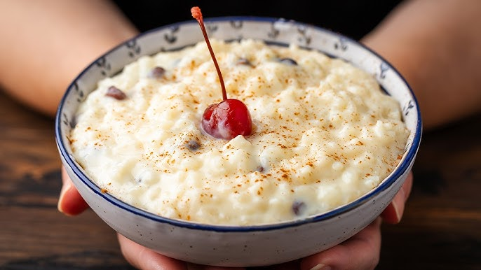

Pudding

This sweet rice pudding is thick, creamy, and utterly decadent.
Made with basic ingredients you likely already have on hand,
this rice pudding recipe is the perfect comforting treat.
Ingredients
- Rice
- Milk
- Sugar
- Salt
- Butter
- Egg
- Vanilla
- Raisins
Steps
- Gather the ingredients
- Pour water into a saucepan and bring to a boil over medium heat; stir in rice.
Reduce heat to low, cover, and simmer until rice is tender
and liquid has been absorbed, about 20 minutes.